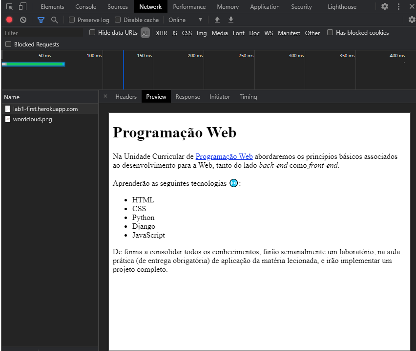
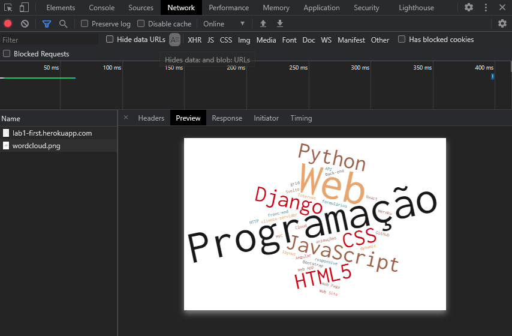

No decorrer do laboratório 1, foi solicitado dos alunos que explorassem
aspetos de alguns elementos que suportam a Web, de forma a
adquirirmos conhecimentos quanto ao seu funcionamento.
Isto inclui endereços IP, route tracing, funcionamento do acesso
via HTTP a páginas web e inspeção de ficheiros e elementos das
mesmas através de browser developer tools.
Nota: Quaisquer endereços IP pessoais não serão demonstrados nesta página.
Nesta etapa foi pedido que os alunos verificassem o seu endereço IP do
PC e obtessem a localização do mesmo.
Abaixo podemos ver a localização
obtida através da página web WhatIsMyIPAddress
Nesta etapa foi pedido que os alunos verificassem o seu endereço IP do
telemóvel, na mesma página web usado para o fazer no PC.
Denote-se que o
endereço do telemóvel é diferente pois foram utilizados dados móveis e que,
além disso, a localização obtida parece ser muito mais precisa ou invés de
apenas uma área geral.
Abaixmos vemos a localização obtida.
No dia do laboratório (sexta-feira, 19/02/2021) o endereço IP mostrado
para a aplicação hospedada pelos servidor do serviço Heroku demonstrava-se
como 52.48.56.224
No entanto, no dia seguinte (sábado, 20/02/2021),
quando esta secção do report foi elaborado, verifica-se que o endereço IP
mudou para 99.81.152.224.
Apesar disto, a localização do endereço é a
mesma, como visto nas imagens abaixo.
Vemos que em ambos os casos a localização demonstrada se encontra na área geral de Dublin, Irlanda
Abaixo vemos também route tracing visual, usando o a página web
GeoTracerRoute.
Podemos ver que neste, o
endereço IP final se encontra na cidade de Frankfurt, Alemanha.
Tal sucede apesar da localização na página verificada anteriormente se
encontrar em Dublin, Irlanda
Nota: Não foi utilizada uma imagem com zoom-in maior pois
a qualidade deteriora-se bastante e um dos saltos é demasiado pequeno para
ser apropriadamente indicado.
Por estas razões foi decidido colocar uma
imagem com essa informação dada pela interface desta página.
Nesta secção, foi-nos passada informação compactada de como um Web
browser comunica com um servidor Web através do protocolo HTTP.
O cliente pode também enviar dados ao servido através de uma mensagem HTTP POST, por exemplo de um formulário preenchido.
Com a browser developer tool, podemos analisar informação dos
ficheiros que o cliente descarrega ao abrir uma página.
Abaixo
encontram-se exemplos do uso desta ferramenta, tendo sido recolhidas
informações dos ficheiros presentes na página da aplicação durante o
laboratório.
Podemos ver na imagem que foram descarregados dois ficheiros:
Podemos verificar nas imagens abaixo que este ficheiro contém o conteúdo HTML da página, responsável pelo texto. emotes/emojis, formatação do mesmo e mais.
Pelas imagens abaixo, verificamos que este ficheiro contém uma imagem, que é depois exibida visualmente na página de acordo com a informação dada pelo ficheiro HTML da página
Nestas várias imagens, podemos verificar que muita informação pode ser recolhida com uma análise de uma página web com esta ferramenta, permitindo a quem saiba interpretar a mesma perceber o funcionamento da mesma.
Algumas referências foram usadas ao elaborar esta página web, usadas maioritariamente de forma a formatar texto ou alterar o comportamento de certos elementos da forma desejada.
Nota: Referências foram adicionadas à medida que foram necessárias e pesquisadas, não estando listadas em qualquer order particular.